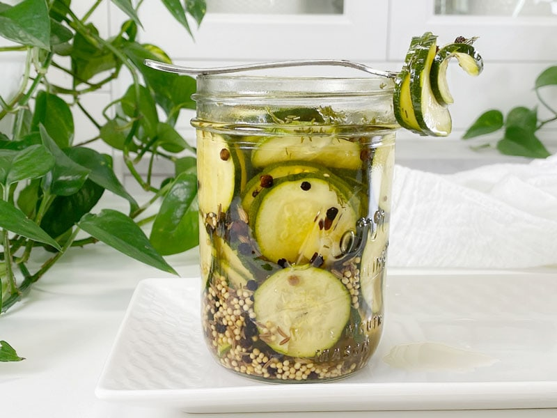

Bread and Butter Refrigerator Zucchini Pickles
The other day, I made Savory Refrigerator Zucchini Pickles. I am pleased but embarrassed to say that I ate almost a whole pint in one sitting. Bob enjoyed them as well, but he put a request in for sweet pickles which led me to make this recipe, which turned out very delicious. There is fine balance between the hit of vinegar and sweetness, and for us, I nailed it. Often, I find Bread and Butter Pickles to be too sweet, so if you find that this recipe isn’t sweet enough for you, please make any adjustments to fit your taste buds.

Finding the right sugar took a little thought. I sat in the Kitchen Studio for a bit, pondering on what to use for a sweetener. The sweetener that you are going to use will depend on your own dietary convictions. I will list a couple of options and you can decide which one resonates with you. Also, add less sweetener to the brine and give it a taste test to see the level of sweetness that you like. I ended up using organic cane sugar since I had some for my Kombucha making. There are many different “sugars” on the market, but I won’t be going over all of them. I am just going to provide a few options that I use.
Sweetener Options
Maple Syrup
- Maple syrup is sweeter than sugar, so use 4 Tbsp instead of 6.
- Will impart a caramel undertone, but not too noticeable with the other spices.
Marcus Sweet
- Made from Lohan Guo Monkfruit and Erythritol, a natural alcohol sugar found in the human body made from non-GMO plant sources. It passes right through the body without being absorbed and has no effect on the gastrointestinal tract: no gas or diarrhea. It tastes like brown sugar with a hint of caramel. Zero calories, zero glycemic index, so it doesn’t raise blood sugar or insulin. Great for diabetics. Doesn’t feed candida or yeast.
- Use a 1:1 ratio, so in this recipe, you will use 6 Tbsp.
Organic Cane Sugar
- Organic cane sugar is an unrefined sugar.
- Compared to white sugar, organic cane sugar has the full-bodied taste of sugarcane and is much less processed, retaining a lot of the nutrients present in cane juice.
- Unrefined cane sugar contains 17 amino acids, 11 minerals and 6 vitamins, including antioxidants.
Pickle Tips (say that 10x real fast)
- When filling the jar with water, be sure that all of the zucchini is covered.
- Don’t be afraid to crowd the jar with zucchini spears, as they will shrink a bit once they sit in the brine.
- It’s important to use coarse sea salt or kosher salt that does not contain iodine. Iodized salt can discolor your pickles and result in a cloudy brine.
- This recipe is strictly intended to be a refrigerator pickle recipe. The pickles must be kept refrigerated and will stay fresh and tasty for 2 weeks or more.
- If you don’t have any fresh dill on hand, increase the dill seed to 1/2 teaspoon per jar.
- Instead of distilled white vinegar, you can use raw apple cider vinegar, which has better health benefits. Just be aware that it will affect the color of the brine and pickles.
- How many of you are still saying “pickle tips” while reading this?
I listed out the spice ingredients in single-jar measurements, so you can make as many as you need without figuring out the math. I found that adding the spices to each jar ensured an even distribution. If you combine them all together in the brine and pour it into the jars, the flavors won’t be as balanced.
 Ingredients
Ingredients
Yields 4 pint-sized jars
Pickles
- 1 1/2 pounds zucchini (3 to 4 medium-sized zucchini)
Seasoning Per Jar
- 2 garlic cloves, peeled and halved
- 1/2 tsp black peppercorns
- 1/2 tsp mustard seeds
- 1/4 tsp caraway seeds
- 1/2 tsp dried dill
The Brine
- 2 1/2 cups hot water (to dissolve the salt & sugar)
- 1 cup distilled white vinegar or raw apple cider vinegar
- 6 Tbsp sweetener, see above for options
- 2 Tbsp coarse sea salt or kosher salt
Preparation
Brine
- Combine the hot water, vinegar, sweetener, and salt in a pourable container. Set aside.
- The hot water will help dissolve the salt and sugar.
Pickle Prep & Assembly
-
Wash the zucchini; trim the ends off, slice into chips or spears. Set aside.
-
Add the seasonings into the base of each pint-sized mason jar.
-
Fill with the cut zucchini.
-
Pour the brine into the jars over the zucchini, leaving about 1/2″ of head space. Tightly secure lids and gently shake the jars.
-
Refrigerate for 24 hours or more before eating.
-
These pickles will keep refrigerated for 2 to 3 weeks.
-
Make sure to label and date each jar. It’s easy to lose track of time.
© AmieSue.com